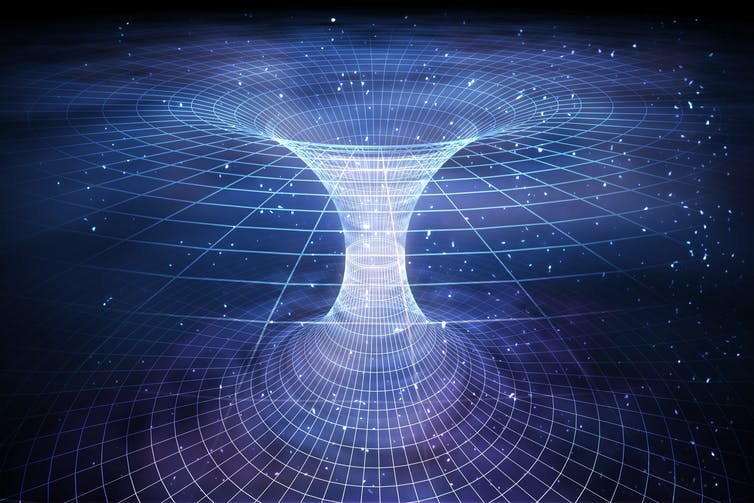

In science, a theory is an idea or way of describing what happens or could happen in reality. You might have heard of the theory of general relativity, created by physicist Albert Einstein over a hundred years ago. It describes gravity, which is what keeps us on the Earth and keeps the Earth orbiting the Sun. This theory also describes wormholes in a mathematical way.
So how do wormholes work in theory?
First, we need to think about something called space-time. We often imagine space-time as a stretchy fabric sheet. Everything in our universe lives on this imaginary space-time fabric sheet. By thinking about the fabric sheet, we are visualising something called a two-dimensional surface. Someone walking around on the sheet can choose two kinds of movement: going forwards/backwards or going left/right. In reality, space is three-dimensional: you can also jump up and down! In fact, there’s a fourth dimension: time. You might not think of time as a “dimension” but physicists do. Put all the dimensions together, and you get what we call space-time. Getting back to wormholes, imagine we want to get from one place to another on the space-time fabric, say from home to the distant planet. Even with a spaceship this journey could take thousands of years or even longer. What if we could fold over the fabric so that our home and the far away planet line up, and then make a hole connecting the two layers of space-time? Then we would have a shortcut tunnel to get to the planet without having to go the long way around! No one knows where to start on how or if a wormhole could be made in reality, but it’s pretty fun to think about them and they’d be great for exploring our enormous universe.